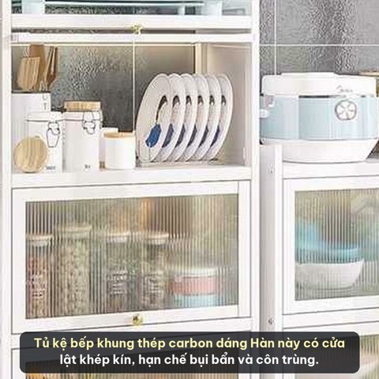

좁은 주방의 변신! 플립도어 탄소강 주방 수납장 구매 가이드
복잡한 주방 조리대를 한 번에 정리해주는 감성 수납템, '플립도어 탄소강 수납장'을 소개합니다. 투명한 도어로 내부 확인이 쉽고 먼지 유입을 차단해 위생적인 주방 환경을 만들어줍니다.
제휴 안내: 본 글의 일부 링크는 제휴 마케팅 링크이며, 구매 시 소정의 수수료를 제공받을 수 있습니다.
AdSense Display Slot (Ready for AdSense Approval)
한국형 아파트와 원룸에 최적화된 '틈새 수납' 솔루션
한국의 주거 환경 특성상 주방 조리 공간은 항상 부족하기 마련입니다. 특히 에어프라이어, 전자레인지, 커피머신 등 늘어나는 주방 가전으로 고민이라면 세로형 수납이 정답입니다.
- 공간 효율성: 위로 쌓는 수납 구조로 좁은 조리대 공간을 2배로 활용할 수 있습니다.
- 먼지 차단 플립도어: 위로 밀어 넣는 방식의 도어는 열어두어도 조리 동선에 방해가 되지 않으며, 닫았을 때는 조리 시 발생하는 기름때와 먼지로부터 식기를 보호합니다.
탄소강 소재의 견고함과 모던한 디자인
저가형 플라스틱 수납장과는 차원이 다른 안정감을 제공합니다. 고강도 탄소강 프레임을 사용하여 무거운 가전제품을 올려두어도 휘어짐 걱정이 적습니다.
- 강력한 하중 지지: 전자레인지나 무거운 냄비 세트도 안정적으로 수납 가능합니다.
- 생활 방수 및 오염 방지: 특수 코팅 처리로 물기나 양념이 묻어도 행주로 가볍게 닦아내면 청결하게 유지됩니다.
- 반투명 감성: 내부가 은은하게 비치는 도어 디자인으로 답답해 보이지 않으면서도 깔끔한 '인스타 감성' 주방을 연출합니다.
다양한 활용 시나리오: 주방 그 이상
이 제품은 주방뿐만 아니라 집안 곳곳에서 다용도로 활용할 수 있습니다.
- 홈카페 존: 상단에는 커피머신을, 내부에는 원두와 컵을 보관하여 나만의 카페를 만들어보세요.
- 원룸 멀티 수납: 좁은 원룸에서 식기건조대 겸 간이 식료품 저장고(팬트리)로 활용하기 좋습니다.
- 데스크 테리어: 서재나 작업실에서 문구류나 피규어 장식장으로도 손색없습니다.
Pros
- ✅ 플립도어 방식으로 좁은 공간에서도 문 열림이 자유로움
- ✅ 탄소강 프레임의 튼튼한 내구성과 높은 하중 지지력
- ✅ 투명/반투명 도어로 내용물 확인이 쉽고 먼지 유입 방지
- ✅ 모던하고 심플한 디자인으로 어떤 인테리어와도 잘 어울림
Cons & Checkpoints
- ⚠️ 직접 조립이 필요한 DIY 제품 (설명서 동봉)
- ⚠️ 도어 패널의 경우 지문 방지를 위해 주기적인 관리가 필요함
FAQ
조립이 어렵지는 않나요?
기본적인 공구가 포함되어 있으며, 설명서를 따라 20~30분 내외로 성인 혼자서도 충분히 조립 가능한 수준입니다.
대형 전자레인지도 들어갈까요?
제품의 각 칸 높이와 폭을 확인해야 합니다. 보통 표준 사이즈의 전자레인지는 수납 가능하나, 광파오븐 등 대형 가전은 상단 선반에 배치하는 것을 권장합니다.
습기가 많은 주방에서 녹슬지 않을까요?
고품질 탄소강에 방청 코팅 처리가 되어 있어 일반적인 주방 환경에서는 녹 걱정 없이 위생적으로 사용 가능합니다.